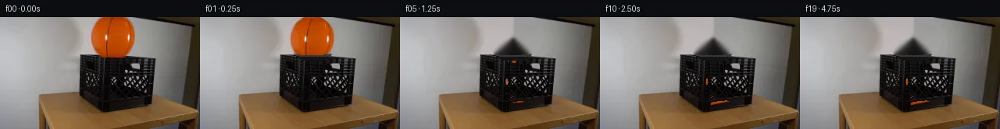

![首帧]()

Round 00
2026-11-04T19:45:23.900041+00:00像素候选变化代码 +187/−0inspection 更新
pixels b32e2a465ca9dcaa · code e7823d09d1916a96
查看本轮 generate.py 真实 diff
--- previous/generate.py +++ current/generate.py @@ -0,0 +1,187 @@ +from pathlib import Path + +import cv2 +import numpy as np +from PIL import Image, ImageDraw + +import artifact_io + + +ROOT = Path(__file__).resolve().parent +W, H = 256, 144 + + +def smooth_alpha_circle(size=60, cx=29.5, cy=29.5, radius=29.2): + """Four-times supersampled circular coverage mask.""" + scale = 4 + yy, xx = np.mgrid[: size * scale, : size * scale] + coverage = ((xx + 0.5) / scale - cx) ** 2 + ((yy + 0.5) / scale - cy) ** 2 <= radius**2 + return coverage.reshape(size, scale, size, scale).mean(axis=(1, 3)).astype(np.float32) + + +def make_ball_sprite(source): + """Recover the photographed ball, adding only its four clipped top rows.""" + size = 60 + sprite = np.zeros((size, size, 3), np.float32) + # Full ball coordinates are x=115..174 and y=-4..55 in source coordinates. + crop = source[0:56, 115:175].astype(np.float32) + sprite[4:60] = crop + # The missing cap is tiny. Extrapolate from the first photographed rows, then + # apply the same left-to-right illumination trend seen on the visible cap. + for y in range(4): + sample_y = min(7, 7 - y) + sprite[y] = sprite[sample_y] + alpha = smooth_alpha_circle(size=size) + + # Replace any extrapolated background in the missing cap with a shaded + # orange surface. Photographed pixels remain untouched everywhere else. + yy, xx = np.mgrid[:size, :size] + cap = (yy < 4) & (alpha > 0) + nx = (xx - 29.5) / 29.2 + ny = (yy - 29.5) / 29.2 + nz = np.sqrt(np.maximum(0.0, 1.0 - nx * nx - ny * ny)) + light = np.clip(0.56 + 0.34 * nz - 0.09 * nx - 0.05 * ny, 0.42, 0.95) + base = np.stack((238 * light, 91 * light, 10 * light), axis=-1) + sprite[cap] = base[cap] + return np.clip(sprite, 0, 255).astype(np.uint8), alpha + + +def make_clean_plate(source): + """Inpaint the ball footprint while preserving the rest of the photograph.""" + yy, xx = np.mgrid[:H, :W] + mask = (((xx - 144.5) / 30.5) ** 2 + ((yy - 25.0) / 30.5) ** 2 <= 1.0) & (yy < 58) + mask = cv2.dilate(mask.astype(np.uint8) * 255, np.ones((5, 5), np.uint8), iterations=1) + # TELEA is deterministic and reconstructs the wall/screen boundary from its + # local continuation on either side of the removed ball. + plate = cv2.inpaint(source, mask, 5, cv2.INPAINT_TELEA) + return plate, mask + + +def make_crate_occluder(plate, removal_mask): + """Select photographed crate rails/lattice to sit in front of the ball.""" + gray = cv2.cvtColor(plate, cv2.COLOR_RGB2GRAY) + gx = cv2.Sobel(gray, cv2.CV_32F, 1, 0, ksize=3) + gy = cv2.Sobel(gray, cv2.CV_32F, 0, 1, ksize=3) + grad = cv2.magnitude(gx, gy) + + region = np.zeros((H, W), np.uint8) + cv2.fillPoly(region, [np.array([(101, 46), (200, 49), (198, 108), (134, 122), (101, 104)], np.int32)], 255) + # High-contrast dark edges capture the real X lattice without treating the + # dark voids between bars as solid foreground. + lattice = ((region > 0) & (gray < 128) & (grad > 28)).astype(np.uint8) * 255 + lattice = cv2.dilate(lattice, np.ones((3, 3), np.uint8), iterations=1) + + rails = np.zeros((H, W), np.uint8) + # Rear lip and the strong front/side frame members. + cv2.fillPoly(rails, [np.array([(102, 48), (198, 50), (198, 56), (103, 55)], np.int32)], 255) + cv2.fillPoly(rails, [np.array([(103, 55), (133, 64), (134, 120), (127, 118), (102, 103)], np.int32)], 255) + cv2.fillPoly(rails, [np.array([(129, 63), (198, 60), (198, 68), (132, 73)], np.int32)], 255) + cv2.polylines(rails, [np.array([(132, 71), (134, 119), (196, 105), (198, 64)], np.int32)], False, 255, 4, cv2.LINE_AA) + cv2.polylines(rails, [np.array([(133, 95), (196, 84)], np.int32)], False, 255, 3, cv2.LINE_AA) + cv2.polylines(rails, [np.array([(134, 117), (196, 104)], np.int32)], False, 255, 4, cv2.LINE_AA) + + occ = cv2.bitwise_or(lattice, rails) + fg = plate.copy() + # The rear lip was hidden by the ball in frame 00. Reconstruct just that + # narrow strip with a subdued black-plastic tone and a one-pixel highlight. + hidden_rail = (rails > 0) & (removal_mask > 0) & (np.indices((H, W))[0] <= 57) … diff truncated; 100 more lines …